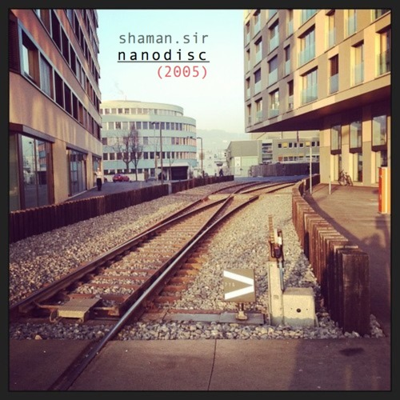

Contacts
{kind=link}
Posts
- 16 Feb '13
- “Mastering Functional JavaScript” Lecture Slides
- 04 May '11
- GWT + mvp4g Lecture Slides
- 06 Dec '10
- Modelling Solar System in Fluxus
- 12 Aug '10
- Way of the Raibow: Fingers Motion Detection Algorythm Based on Colors Differentiation
- 09 Jan '10
- 10 Useful Solutions for Android Developer
- —
- More...
- 16 Feb '13
- Слайды «Постигаем функциональный Javascript»
- 22 Feb '13
- Путь асинхронного самурая
- 21 May '11
- JavaScript Гарден на русском
- 04 May '11
- Слайды мастер-класса по GWT и mvp4g
- 05 Jan '10
- 10 полезных решений для разработчика под андроид
- —
- Ещё...
Main Topics
In English
In Russian
Links
CV
Recap
- 10+ Years in Programming (since April 2004)
- 8 Years in Web Development, among them
- 6 Companies, incl. Nikon & JetBrains affilates
- Longest time in one company: 35+ months
- Languages: English, Russian
- Worked in 3 cities: Saint-Petersburg, Odessa, Munich
Expertise
Experience
- Animatron
- JavaScript Developer Animatron Player 06/2011—current (35+ months)
- iPark Ventures
- GWT Developer Experika 04/2010—06/2011 (14 months)
- Exectum LLC
- Java/JS Developer 09/2009—02/2010 (5 months)
- Sea Project
- JavaScript Developer IETKB 08/2009—09/2009 (1 months)
- Piclinq (Fotonation)
- JavaScript Developer myPictureTown 07/2007—05/2009 (22 months)
- FK LTD
- JavaScript Developer 11/2006—06/2007 (7 months)
- EmDev LLC
- Java & JavaScript Developer UnlockAustin 05/2005—10/2006 (17 months)
- VNIIOkeangeologiya
- Delphi Developer 04/2004—03/2005 (11 months)
Alternate versions
Sounds
.cover.jpg "Back EP (2013)") Back EP (2013)
Back EP (2013)-
- Apollo
- Monad (Edit'n'Cut)
- Bebop
- Floyd Experiment
- Blood (BF Contest)
 (2013)") Back EP (B-sides) (2013)
Back EP (B-sides) (2013)-
- Monad. Tryptich
- Floyd Experiment (Edit)
- Intrincado
- Winter 'mphony
- Winter 'mphony II
- Bleed (Long)
- nanodisc (2005)
-
- intro
- beijing
- quadline
- nothin original
- intro wow
- sch0ck (2003)
-
- Intro
- 563rd Dimension Cross
- Loop Mode
- Stars
- Da Club Rel@xin
- Dead Fish
- coolah (Cold Juice)
- Coma
- King of the Sleeptime
- King of the Dreams
- White Noise
- 4get 'bout it
- Samplicity Funk
- Madness
- Whadda Hell
- ReB00t
- matriX
- MIDI Man
- pure rave stage
- outro
Social